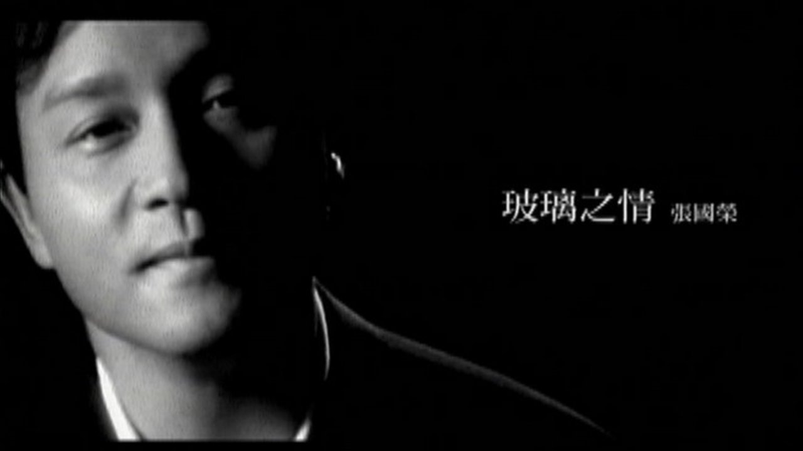
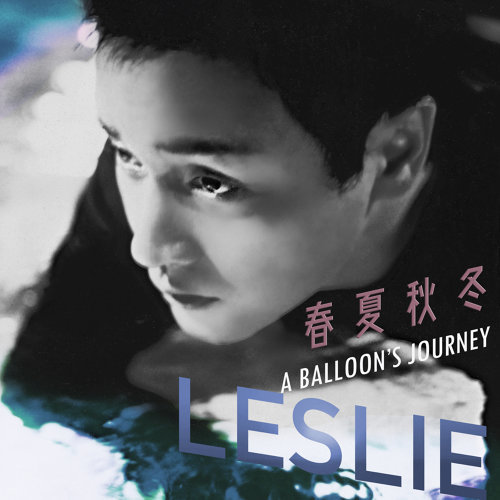

首頁
當年情常在心...紅塵夢醒無憾...
歌唱事業

張國榮曾獲得十大中文金曲頒獎禮最高榮譽大獎金針獎，十大勁歌金曲最受歡迎男歌手獎，
十大勁歌金曲金曲金獎，叱咤樂壇流行榜頒獎典禮叱咤樂壇男歌手金獎等獎項。
作為粵語流行音樂高峰時期的代表人物之一， 1980年代張國榮於韓國取得非常高的知名度，
是第一位享譽韓國樂壇的華人歌手。1987年發行的國語專輯《愛慕》在韓國空前大賣20萬張，
成為首位打入韓國的唱片市場的華人歌手。
1989年張國榮發行的專輯《The Greatest Hits of Leslie Cheung》在韓國銷量達30萬張，
打破了華語唱片在韓國的銷量紀錄。
1995年發行的專輯《寵愛》在韓國的銷量超過50萬張，至今仍保持華語唱片在韓國的銷量紀錄。
- 逝世後（2003至今）
-
張國榮逝世後，華語流行樂傳媒大獎追頒張國榮「終身成就獎」，以表彰他對華語流行音樂的貢獻。
2003年7月，環球唱片公司推出張國榮的遺作《一切隨風》，專輯上市第一天在香港就創造了一分鐘賣出一張的紀錄。
2010年1月，張國榮的精選專輯《最紅》獲得2009年香港IFPI全年最高銷量唱片大獎。
同年8月，國際知名傳媒CNN列出了「20組過去50年來聞名全球的顯赫歌手、樂團」，張國榮是唯一入選的香港歌手，
過去五十年，聞名全球的五大指標音樂人」選舉結果揭曉，張國榮排名第三，
其他上榜歌手或樂團包括麥可·傑克森、披頭四樂團、艾維斯·普里斯萊（貓王）和雷鬼王鮑勃馬利；

同年，張國榮入選「國際華語音樂聯盟」評選的華語樂壇「30人、30歌、30碟」3項評選，
並獲得「我最喜愛的歌手」「我最喜愛的唱片」「我最喜愛的歌曲」3項殊榮，成為歷久常新的時代偶像。
2011年，環球唱片推出張國榮的精選專輯《Four Seasons》，一發售即登上香港唱片商會銷量榜榜首，此後連續上榜12周。
2016年，華星唱片發行張國榮的精選專輯《哥哥的歌》獲得2016年香港IFPI全年最高銷量唱片大獎。
2020年，環球唱片發行經重製的精選專輯《Revisit》，主打歌《春夏秋冬 A Balloon's Journey》採用了以前從未曝光的聲帶。